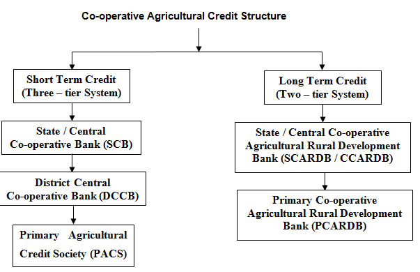

AECO241 :: Lecture 11 :: AGRICULTURAL COOPERATION-PHILOSOPHY AND PRINCIPLES

AGRICULTURAL COOPERATION-PHILOSOPHY AND PRINCIPLES. HISTORY OF INDIAN CO-OPERATIVE MOVEMENT, PRE-INDEPENDENCE AND POST INDEPENDENCE PERIODS, COOPERATION IN DIFFERENT PLAN PERIODS, COOPERATIVE CREDIT STRUCTURE-PACS, FSCS
Co-operation and Co-operative Credit
According to Calvert, “Co-operation is a specialized form of economic organization in which people voluntarily associate together on a basis of equality for the promotion of their common economic interests”.
A Co-operative Society is an enterprise formed and directed by an association of users, applying within itself, the rules of democracy, and directly intended to serve both its own members and the community as a whole - Lambert.
Principles of Co-operation
A co-operative society is a special type of business organization different from other forms of organization. The characteristics / principles of co-operative society are:
i) Open Membership / Universality
The membership of a Co-operative Society is open to all those who have a common interest, those who are convinced of its benefits and those who are prepared to share the benefits and responsibilities involved in such a membership. A minimum of ten members are required to form a cooperative society. The Co–operative Societies Act does not specify the maximum number of members for any co-operative society. However, after the formation of the society, the member may specify the maximum number of members.
ii) Unity or Political and Religious Neutrality
Unity is the fundamental force behind all co-operative organizations. It is above all beliefs, faiths and convictions.
iii) Voluntary Association
Members join the co-operative society voluntarily, that is, by choice. A member can join the society as and when he likes, continue for as long as he likes, and leave the society at will.
iv)State Control
To protect the interest of members, co-operative societies are placed under state control through registration. While getting registered, a society has to submit details about the members and the business it is to undertake. It has to maintain books of accounts, which are to be audited by government auditors.
v) Sources of Finance
In a co-operative society, capital is contributed by all the members. However, it can easily raise loans and secure grants from government after its registration.
vi) Democratic Management
Co-operative societies are managed on democratic lines. The society is managed by a group known as “Board of Directors”. The members of the board of directors are the elected representatives of the society. Each member has a single vote, irrespective of the number of shares held. For example, in a village credit society the small farmer having one share has equal voting right as that of a landlord having 20 shares.
vii) Service Motive / Limited Interest on Capital
The main aim of the society is not to earn abnormal profit but to enable the members to improve their economic conditions. If there is any excess income, it will be used to meet unforeseen loss or strengthening the funds of the society so that cheaper services may be made available to the members. Co-operatives are not formed to maximize profit like other forms of business organization. The main purpose of a Co-operative Society is to provide service to its members. For example, in a Consumer Co-operative Store, goods are sold to its members at a reasonable price by retaining a small margin of profit. It also provides better quality goods to its members and the general public.
viii) Separate Legal Entity
A Co-operative Society is registered under the Co-operative Societies Act. After registration a society becomes a separate legal entity, with limited liability of its members. Death, insolvency or lunacy of a member does not affect the existence of a society. It can enter into agreements with others and can purchase or sell properties in its own name.
ix) Distribution of Surplus
Every co-operative society in addition to providing services to its members, also generates some profit while conducting business. Profits are not earned at the cost of its members. Profit generated is distributed to its members not on the basis of the shares held by the members (like the company form of business), but on the basis of members’ participation in the business of the society. For example, in a consumer co-operative store only a small part of the profit is distributed to members as dividend on their shares; a major part of the profit is paid as purchase bonus to members on the basis of goods purchased by each member from the society.
x) Self-help through Mutual Cooperation
Co-operative Societies thrive on the principle of mutual help. They are the organizations of financially weaker sections of society. Co-operative Societies convert the weakness of members into strength by adopting the principle of self-help through mutual co-operation. It is only by working jointly on the principle of “Each for all and all for each”. The members can fight exploitation and secure a place in society.
xi) Principles of Publicity
The co-operative organizations do not believe in maintaining secrecy about their working and progress.
xii) Members should have the spirit of dedication and service with absolute honesty and unquestionable integrity. Hence, co-operation is the movement of the people, for the people and by the people.
History of Co-operative Movement
Robert Owen (1771–1858) is considered the father of the cooperative movement. Owen believed in putting his workers in a good environment with access to education for themselves and their children. He put his ideas into effect successfully in the cotton mills of New Lanark, Scotland. It was here that the first co-operative store was opened.
The Famine Commission of 1901 recommended the establishment of Agricultural Banks on the lines of Mutual Credit Association of Europe to provide credit to farmers in order to prevent further famine and also to improve agriculture. A Committee under the presidentship of Sir Edward Law drafted a model bill to establish co – operative credit societies. The bill was passed as Co-operative Credit Societies Act on 25th March, l904.
Provisions were made in this Act to establish credit societies both in rural and urban areas for providing credit facilities at cheap rates to needy people of the locality. Rural societies were organized on ‘Raiffeisen Model’ while the urban societies were established on ‘Schulze Delitzch Pattern’. In Raiffeisen Model, unlimited liability was an important feature while in Schulze Delitzch societies, limited liability principle was followed.
In the event of liquidation of limited liability societies, the liability of the members is limited to their share capital or it may be one to five times of the share capital as prescribed by the by-law of the society. The advantage is that members have confidence that their property is safe, even if the society is liquidated. In the event of liquidation of unlimited liability societies, the members lose not only their share capital but their other properties upto the extent of the loss of the society. The main advantages of unlimited liability are the mutual trust and watchfulness it creates among the members.
Realizing the defects noticed in the Co-operative Credit Society Act, 1904, that is, i) no provision for purposes other than credit, i.e., marketing and ii) unlimited liability, the Government passed Co-operative Societies Act, 1912.
According to this, a) non – credit societies can also be formed and b) the liability of the central societies (collection of primary societies) shall be limited and the liability of rural (primary) societies shall be unlimited. After 1912, there was a rapid growth not only in the number of co-operative credit societies but also in non - agricultural credit societies. However, the development was not even. It made rapid progress only in Bombay, Madras and Punjab (where agriculturists had mortgage rights) than in the Zamindhari areas like Bengal.
In 1914, the Government of India appointed a committee under Sir Edward Maclagan to examine the progress of the co-operative movement and to suggest measures for improvement. The defects noticed by the committee were:
a) Misappropriation of funds by the members of the management committee,
b) Nepotism in advancing loans to friends and relatives,
c) Improper auditing and inspection of societies.
The major recommendations were:
i) Formation of three classes of societies namely:
a) primary meant for individuals and unions or federation of societies meant for supervision;
b) Central bank at district level for banking business; and
c) Provincial bank at the provincial 1evel to serve as apex banks.
ii) Restriction of area under primary society to a village, and
iii) Encouragement of non –credit societies through the financial support by central banks.
On passing of the Government of India Act in 1919 under the Montague Chelmsford Reforms, co-operation became the provincial subject and was administered by provincial governments. The economic prosperity between 1920 and 1929 facilitated rapid increase in the number of societies. However, due to the world wide Great Depression (1929-34) and the Second World War, the co-operative movement had a serious set back.
Progress of Co-operative Societies
Year |
Number of Societies |
Members (000’s) |
Amount of Working Capital (Rs. Crores) |
1906-07 |
843 |
90.844 |
0.25 |
1911-12 |
8177 |
403.318 |
3.36 |
1914-15 |
17327 |
824.469 |
12.23 |
1921-22 |
52182 |
1974.290 |
31.12 |
1929-30 |
104187 |
4181.904 |
89.52 |
1939-40 |
137000 |
6080.000 |
107.10 |
1945-46 |
172000 |
9160.000 |
164.00 |
Many committees were appointed to study the progress of co-operative movement. In Madres, Madras Co-operative Societies Act, 1932 and the Madras Co-operative Land Mortgage Banks Act, 1934 were passed. While the 1932 Act conferred more power on the Registrar with regard to the recovery of bad debts, audit, supervision and control, the 1934 Act provided for long-term credit through co-operative land mortgage banks. The Madras Province appointed a Committee on Co-operation (1939) under T.Vijaya Raghavachary to study the conditions of the co-operative movement in the state. The committee suggested several amendments to 1932 Act.
The Reserve Bank of India was established in 1935 with an Agricultural Credit Department. The RBI conducted enquiries and advised the provincial governments to improve the working of credit societies. The Agricultural Finance Sub Committee (Prof. D.R.Gadgil Committee) set up in 1944, recommended that the state aid should be increased so that co-operatives might be enabled to supply better credit facilities. It also recommended for the adoption of limited liability to the co-operatives. It was also felt that the cooperatives would be strengthened through linking credit with marketing, setting up of processing plants by grant of liberal loans and subsidies, and training of expert staff.
In 1945, the Government of India appointed the Cooperative Planning Committee under the chairmanship of R.G. Saraiyya for drawing up a plan for future development of the co-operative movement. It recommended that the rural credit societies should function as multi-purpose societies so as to attend to all economic activities of the farmers. It paved the way to linking credit with marketing of agricultural produce.
Development of Co-operatives during Post Independence Period
The Rural Banking Enquiry committee (1949-50) recommended for the formation of Rural Co – operative Banks. The All India Rural Credit Survey (AIRCS) committee was appointed in 1951 under the chairmanship of A.D.G Gorwala. The committee brought to light some defects in the organizational, operational and structural aspects of the co-operative institutions and stated, “The co-operation in India has failed but it must succeed as there was no alternative to the co- operative form of association in the village for the promotion of agricultural credit development”. The committee recommended an Integrated Scheme of Rural Credit by involving three fundamental principles namely, i) State participation in co-operative institutions at different levels, ii) co-ordination of credit with other economic activities especially processing and marketing, and iii) administration through training and efficient personnel responsible to the needs of the rural population.
Under the provisions of the Agricultural Produce (Development and Ware housing) Corporation Act 1956, the National Co-operative Development and Ware Housing Board was established. The RBI had established the National Agricultural Credit (Long Term Operations) Fund in 1956 to provide long-term loans to the state governments for enabling them to contribute to the share capital of co-operative institutions. It also created National Agricultural Credit (Stabilization) Fund to enable the short term credit granted to the co-operatives to be converted into medium term loans in circumstances in which the co-operatives could not repay short term loans due to natural calamities.
The Committee on Co-operative Credit (1960) headed by Vaikunt Lal Metha recommended measures to secure a balance between economic viability and the co-operative ideology, liberalization of rules and procedures for disbursal of credit. It recommended big sized societies, granting short-term loans for landless people, linking credit with marketing, etc.
The Madras Full Finance Scheme Committee 1960 stressed that loan should be given to landless cultivators and tenants. It emphasized that the production and purpose-oriented credit should be purveyed to farmers.
An expert committee under Dr. Dantwala was appointed in 1964. It recommended that the primary marketing societies should take up both marketing and credit activities.
The All India Rural Credit Review Committee (AIRCRC) was appointed by the RBI under the chairmanship of B.Venkatappaiah in 1969 to review the progress of rural credit in the context of IV Five Year Plan. It warned that the lower rung of the rural community should be financed in terms of social justice and as per the recommendation of this committee, 45 Small Farmers’ Development Agencies (SFDAs) were established in the selected districts. The committee recommended for the reorganization of primary societies into viable societies, rehabilitation of weak central co-operative banks, etc. Rural Electrification Corporation was also set up in 1969 to promote and finance the rural electricity co-operatives.
Co-operative Credit Institutions
The co-operative credit structure in India is characterized by two types of institutions: one, involved in the dispensation of short and medium term credit and the other in the provision of long term credit.
The Primary Agricultural Credit Society (PACS) / Primary Agricultural Co-operative Bank (PACB) is the foundation stone on which the whole co-operative credit structure is built up. These societies are federated to District Central Co-operative Bank (DCCB), generally at the district level. The DCCBs are federated to State Co-operative Bank (SCB) which is an apex institution at the state level having close link with the RBI and NABARD. Long term credit is provided by Land Development Banks (LDBs). The State / Central Land Development Bank (now renamed as State Co-operative Agricultural Rural Development Banks (SCARDBs) is the apex institution which operates through Primary Land Development Banks (PLDBs) (now renamed as Primary Co-operative Agricultural Rural Development Banks (PCARDBs) at district / taluk / block level in some states or through its own branches where PCARDBs do not exist.

a) Primary Agricultural Credit Society (PACS)
The formation of these societies dates back to 1904 when the first Co-operative Credit Societies Act was passed. The objective was to provide cheap credit to the farmers in order to relieve them from the clutches of money lenders. Many PACS also undertake multiple activities like sale of fertilizers and other agricultural inputs and several act as distributors of ration items under the Public Distribution System (PDS).The main functions of the PACS are:
- to promote economic interests of the members in accordance with the co-operative principles;
- to provide short and medium term loans;
- to promote savings habit among members;
- to supply agricultural inputs like fertilizers, seeds, insecticides and implements;
- to provide marketing facilities for the sale of agricultural produces; and
- to supply domestic products requirements such as sugar, kerosene, etc.
Management
The general body elects a managing committee which consists of five to nine members and elects a President, Secretary and a Treasurer to look after the day – to – day functioning of the society. All the office bearers render honorary service. The RBI has given a directive to appoint a full time paid secretary to maintain the accounts for each society.
Membership
All agriculturists, agricultural labourers, artisans and small traders in the villages can become members of the society.
Share Capital
PACS issue ordinary shares of small value depending upon the particular society, i.e., Rs.10 and Rs.50 each to their members. The ownership of shares decides the rights and obligations of the holder to the society. Share capital forms an important part of the working capital. Members’ borrowing capacities were determined by the number of shares held by them.
Liability
Initially, societies were formed with unlimited liability. The All India Rural Credit Review Committee pointed out that unlimited liability operates as a restraint on the willingness of the society to liberalize its loan policies, to admit new members and to extend its area of operation. Besides, it hinders the society to receive contribution from the state government whose liability inevitably has to be limited. In view of these reasons, the societies were formed with limited liability and the existing societies were converted into limited liability societies.
Sources of Funds
Share capital, entrance fee, deposits from members and non-members, reserve fund, and loans borrowed from higher institutions (Central cooperative Banks, Commercial Banks and government) and grants and subsidies from the government are the different sources of funds of the co-operative societies. PACSs obtain loans from DCCB or SCB to cater to the needs of their members. The maximum borrowing power of the society is based on its liability and it differs from state to state. It is generally fixed at 1/6th or ⅛th of the total value of the net assets of the solvent members. Credit limit is fixed by the Registrar of Cooperative Societies or DCCBs on the basis of the factors viz., total assets of the members, income and repaying capacity of members, owned funds of the society, audit classification and repayment performance.
Loaning Policies
PACSs supply short-term credit on the personal security of the borrowers, while medium term credit is given either by creating charge on their immovable assets or mortgages. Repayment period is determined on the basis of
incremental income derived out of the loan.
Progress of PACS
The percentage of villages covered by PACS in 1990-91 was 97 which would be positive sign. There have been ups and downs in the ‘Number of PACS’ due to liquidation of unviable PACS between 1950-51 and 1995-96. The ‘Deposits’ in PACS are considerably less than the ‘Loan’ taken by them from Central Banks and Central Financial Agencies (CFAs). Dependence of PACS on Government and Central Banks / CFAs loan on is viable.
The region progress made by PACS is given in the table below and it would reveal that Western region ranked first during 2008 in terms of the presence of number of PACS accounting for 31 per cent of the total number of PACS in India and it was followed by Eastern Region (19 per cent), Southern Region (16 per cent) and so on.. As regards the borrowing, Southern Region ranking first accounting for 42.3 per cent of the total loan amount outstanding and it was followed by Northern Region (21.0 per cent), Western Region (20.6 per cent) and so on. Thus, there is an imbalance in the growth of credit co-operatives in India. The percentage of overdues to demand at all India level was 35.7 per cent.
In order to reorganize and revitalize the non – viable credit co-operatives, the government took several measures which are discussed below:
Regulation of PACS
As a policy of reorganization of PACS into viable units, the number of societies had been brought from 1,61,000 in 1970-71 to 82,905 in 1990-91. The reorganization programmes envisaged the following aspects:
- Minimum short-term loan of Rs.2 lakhs for a society to become a viable unit.
- Coverage of villages with a gross cropped area of 2000 ha to achieve this level of business.
- Appointment of a suitably trained full – time paid secretary to manage its affairs.
The National Bank has formulated a scheme known as instant fresh finance scheme during 1988-89 to issue timely fresh credit to those members of PACS who have repaid their early dues. This policy improvement should go a long way to build confidence of the members in their co-operative society as no member was allowed fresh loan irrespective of whether he has paid or not repaid the loan when the society as such was declared ineligible for fresh financing.
Select Indicators of Primary Agricultural Credit Societies – Region - wise (As at end-March 2008)
(Amount in Rs. Crores)
Regions |
Total No. of PACS |
No. of Villages Covered by PACS |
No.of Villages per PACS |
Total |
Total |
Total Deposits |
Total Loans & Advances Outstanding. |
per cent of overdues to Demand |
Central Region |
14,058 |
172,451 |
12 |
6805 |
3894 |
542 |
4345 |
45.02 |
Eastern Region |
17,843 |
191,389 |
11 |
15513 |
4273 |
3496 |
5721 |
35.23 |
North-Eastern Region |
3,511 |
34,222 |
10 |
316 |
432 |
130 |
528 |
49.88 |
Northern Region |
15,337 |
116,325 |
8 |
5604 |
12033 |
3572 |
13761 |
36.08 |
Southern Region |
14,850 |
78,104 |
5 |
18388 |
14331 |
17302 |
27793 |
26.07 |
Western Region |
29,351 |
55,976 |
2 |
32782 |
12884 |
407 |
13519 |
44.87 |
ALL INDIA TOTAL |
94,950 |
648,467 |
7 |
79408 |
47848 |
25449 |
65666 |
35.67 |
Figures in parentheses indicate percentage share in Total
Source: Performance of Primary Agricultural Credit Societies (April 1, 2007 to March 31, 2008), National Federation of State Cooperative Banks Ltd., Mumbai-400 703.
Task Force on Revival of Rural Cooperative Credit Institutions Chaired by Prof. A. Vaidyanathan
In August 2004, the Government of India set up a Task Force to suggest an action plan for reviving rural cooperative credit institutions and legal measures necessary for facilitating this process.
The Task Force, chaired by Prof. A. Vaidyanathan, has recommended that any financial restructuring without addressing the root causes of the weaknesses of the system would not result in its sustained revival. This would require legal measures for enabling cooperatives to evolve into democratic, self-governing and financially well-managed institutions.
The Vaidyanathan Committee has also suggested a model cooperative law that can be enacted by the state governments. In states, where there are already two laws, the old Cooperative Societies Act and the new Act on the lines of the Model Cooperatives Act, it would be better to gradually converge and have only one Act so as to reduce confusion and legal problems.
The major recommendations of the task force are as follows:
The revival package suggested by the Vaidyanathan Committee is a financial package for wiping off accumulated losses, covering invoked but unpaid guarantees given by State Governments, increasing the capital to a specified minimum level, retiring government share capital and technical assistance. It has also laid down the eligibility criteria for institutions, amongst which implementation of the recommendations for legal and institutional reform is an important condition.
i) Structural Changes in Primary Agricultural Co-operative Banks
The PACS should confine their activities only to rural credit and they should not get themselves involved in the non-credit activities like PDS, etc. Therefore, it is suggested that Primary Co-operative Marketing Societies may be promoted for running the fair price shops.
ii) Co-operation within co-operatives
The SHGs could be made members of the co-operative society. Each Primary Agricultural Cooperative Society shall be a conglomeration of self-help groups, as each SHG is a “Micro Co-operative Society” and this will ensure division of not only power but also an empowerment for the members.
iii) Single Window Lending
Long-term loans could be provided to the farmers by the District Central Co-operative Banks. This will enable the farmers to avail of all their credit needs from a single institution. TNCSARDB could be merged with the Tamil Nadu State Apex Co-operative Bank and PCARDBs could become branches of District Central Cooperative Banks.
iv) Member’s’ Accountability and Members’ Participation
In the absence of members’ participation, the Board of Management and the officials misuse their position and mismanage the affairs of the societies. The members should jointly work to derive the benefits from the society. To promote the members’ interest and welfare, the committee suggested formation of sub-committees viz., Members’ Grievances Committee, Loan Committee, Recovery and Relief Committee, Resources Management Committee and Elected Advisory Committee from the above subcommittees etc.,
v) Cooperatives will need assistance to computerize themselves and install sound accounting and monitoring systems to remain competitive.
vi) All PACS, which presently have a recovery rate of at least 50 per cent and whose gross margin covers at least 50 per cent of their establishment costs should be covered under the package. The DCCBs with positive net worth and those with negative net worth but with less than 25 per cent deposit erosion may be taken up under the package for revival. The same criteria will also apply to SCBs.
vii) All cooperative banks would be on par with the commercial banks as far as regulatory norms are concerned.
vii) State governments may issue Executive Orders to bring in the desired reforms relating to: (i) ensuring full voting membership rights on all users of financial services including depositors; and (ii) removing state intervention in administrative and financial matters in cooperatives.
The task force recommended a financial package of Rs. 14,839 crore for rural credit co-operative institutions. Based on the consensus arrived at with the state governments and other stakeholders on the recommendations made by the task force, the central government approved the revival package that involves financial assistance of Rs 13,596 crore. NABARD has been designated as the implementing agency for the revival of the short-term cooperative credit scheme.
A Department for Cooperative Revival and Reforms has been set up in the head office of NABARD for facilitating the implementation process. For guiding and monitoring the implementation of the revival package, a National-Level Implementing and Monitoring Committee (NIMC) has been set up under the chairmanship of the governor of the RBI. The provision of financial assistance under the package has been linked to reforms in the cooperative sector. In order to avail financial assistance under the package, the state governments are required to sign a MoU with NABARD, committing to implement the legal, institutional and other reforms as envisaged in the revival package. So far, eight state governments, namely, Andhra Pradesh, Maharashtra, Gujarat, Rajasthan, Orissa, Madhya Pradesh, Uttar Pradesh and Uttrakhand have signed MoUs with the Government of India, and four other state governments, namely, Punjab, Bihar, Tamil Nadu and Sikkim, have conveyed their consent for participation in the revival package.
Progress of Cooperative Banks: A. Primary Agricultural Credit Societies in India (Amount in Rs.Crores)
Particulars |
1950-51 |
1955-56 |
1960-61 |
1965-66 |
1970-71 |
1975-76 |
1980-81 |
1985-86 |
1990-91 |
1995-96 |
2000-01 |
2007-08 |
Number of societies |
1,15,462 |
1,59,939 |
2,12,129 |
1,91,904 |
1,60,780 |
1,34,838 |
94,484 |
92,403 |
82,905 |
86,217 |
98,843 |
94,950 |
Membership |
5.15 |
7.79 |
17.04 |
26.14 |
30.96 |
39.52 |
57.65 |
71.22 |
80.12 |
86.02 |
99.918 |
131.53 |
Share capital |
8.40 |
16.80 |
57.75 |
115.32 |
205.74 |
N.A |
757.95 |
N.A |
1226.42 |
N.A |
3883.52 |
6596.65 |
Deposits |
4.48 |
7.05 |
14.59 |
34.49 |
69.46 |
113.31 |
291.34 |
571.98 |
1348.97 |
914.73 |
13481.07 |
25449.26 |
Borrowings |
19.21 |
42.80 |
183.78 |
363.15 |
675.19 |
N.A |
2957.42 |
N.A |
7778.59 |
N.A |
25889.66 |
47847.97 |
Working capital |
40.95 |
79.10 |
273.92 |
546.56 |
1153.40 |
N.A |
4036.03 |
N.A |
11871.92 |
N.A |
53867.47 |
88106.85 |
Loans issued |
22.90 |
49.62 |
202.75 |
341.75 |
577.88 |
N.A |
1769.41 |
N.A |
4678.85 |
N.A |
25698.31 |
57642.48 |
Loans outstanding |
29.13 |
59.84 |
218.00 |
426.90 |
322.40 |
N.A |
2450.64 |
N.A |
6877.23 |
N.A |
34522.33 |
65666.38 |
Percentage of Over dues to outstanding |
21.90 |
25.00 |
20.32 |
29.37 |
41.10 |
N.A |
44.32 |
N.A |
45.65 |
N.A |
34.90 |
35.67 |
N.A.: Not Available.
Source: Statistical Statements relating to Cooperative Movement in India, various years.
b) District Central Co-operative Banks (DCCBs)
CCB / DCCBs form an important link between PACS and SCBs.
Functions
The major functions of CCB / DCCBs are:
- to meet the credit requirements of member societies;
- to perform banking business;to act as balancing centres for the PACS by diverting the surplus funds of some societies to those which face shortage of funds;
- to guide and supervise the PACS; and
- to undertake non-credit activities.
The area of operation is generally a district. All types of co-operative societies such as marketing societies, consumers' societies, farming societies and urban co-operative credit societies apart from PACS can become member of CCB / DCCBs.
Sources of Finance
These banks raise funds by way of share capital, deposits from public, borrowings from SCBs, government, RBI, SBI and commercial banks. The borrowing power of these banks ranges from 12 to 15 times of their paid-up share capital and reserve fund.
Loaning Policy
These banks generally extend short and medium term loans to PACS for financing agricultural activities. Loans are granted against proper security, landed assets, house mortgage, cattle, agricultural produce, jewels etc.
The number of CCB / DCCBs has declined due to reorganization. Because of various reasons, the percentage of overdue has increased from 8.7 per cent in 1950 -51 to 43 per cent in 1990-91.
Progress of Cooperative Banks: B. Central Cooperative Banks (Amount in Rs.Crores)
Particulars |
1950-51 |
1955-56 |
1960-61 |
1965-66 |
2000-01 |
2007-08 |
Number of Banks |
505 |
478 |
390 |
346 |
370 |
372 |
Membership |
207 |
300 |
388 |
362 |
1837.433 |
3396.881 |
Share capital |
4.04 |
4.37 |
18.24 |
28.82 |
3015.78 |
5829.23 |
State Government Contribution towards Share Capital |
N.A. |
N.A. |
10.31 |
19.27 |
48812 |
1139.28 |
Deposits |
37.79 |
55.71 |
112.02 |
236.59 |
61813.20 |
105993.72 |
Borrowings |
9.75 |
21.80 |
141.17 |
244.99 |
16566.68 |
30533.34 |
Working capital |
56.37 |
92.66 |
304.05 |
583.52 |
89541.36 |
168137.52 |
Loans issued |
82.84 |
79.83 |
354.38 |
771.66 |
55780.39 |
87229.09 |
Loans outstanding |
34.14 |
54.34 |
220.03 |
437.72 |
50569.89 |
95974.23 |
Percentage of Over dues to outstanding |
8.67 |
14.50 |
12.47 |
19.89 |
25.24 |
28.69 |
Management
The management of these banks is vested with Board of Directors consisting of 12 to 15 members. A DCCB is considered weak when its estimated bad and doubtful debts, other over dues above three years and accumulated losses exceed 50 percent of its paid-up capital and reserves. Rehabilitation programme is being implemented to revitalize such weak DCCB. As on June 30, 1988, as many as 176 DCCBs were identified as weak and put under rehabilitation programme.
c) State Co-operative Bank (SCB)
It is the apex institution at the state level which links widely scattered PACS with the money market, Reserve Bank of India and the Cooperative movement. The main objective of the bank is to link the widely scattered PACS with the money market and the RBI and to co-ordinate the work of CCB / DCCBs.
The Functions of SCBs are:
- to act as bankers' bank to DCCBs and to supervise, control and guide them;
- to mobilize financial resources needed by the PACS and deploy them properly among the various sectors of the movement;
- to co-ordinate the various development agencies and he1p the government in drawing plans for co-operative development and their implementation;
- to formulate and execute uniform credit policies for co-operative movement;
- to perform banking functions such as issuing cheques, drafts, letters of credit (by issuing letter of credit, a banker requests another party (a banker or trader) to grant a specified amount to a third party specified therein and the issuing banker himself binds to pay the money paid under the letter of credit), collecting and discounting bills, etc.
Progress of Cooperative Banks: C. State Cooperative Banks (Amount in Rs.Crores)
Particulars |
1950-51 |
1955-56 |
1960-61 |
1965-66 |
2000-01 |
2007-08 |
Number of Banks |
15 |
24 |
21 |
22 |
30 |
31 |
Membership |
2 1 |
27 |
30 |
2 1 |
122.464 |
150.917 |
Share capital |
1.58 |
4.37 |
18.24 |
28.82 |
697.11 |
1316.17 |
State Government Contribution towards Share Capital |
N.A. |
N.A. |
6.46 |
9.86 |
64.87 |
152.86 |
Deposits |
22.08 |
36.67 |
72.33 |
146.51 |
32612.95 |
56286.92 |
Borrowings |
8.54 |
19.02 |
125.32 |
198.52 |
11983.35 |
21606.38 |
Working capital |
34.42 |
63.34 |
221.65 |
389.98 |
52216.89 |
89850.76 |
Loans issued |
42.12 |
67.86 |
258.20 |
474.22 |
33612.54 |
53313.76 |
Loans outstanding |
17.90 |
34.77 |
166.69 |
307.93 |
25482.76 |
49101.43 |
Percentage of Over dues to outstanding |
12.01 |
10.64 |
4.18 |
3.13 |
9.85 |
11.12 |
Area of Operation and Membership
Area of operation is within the state. Each state has one apex bank. Some States have more than one as in Maharashtra, Madhya Pradesh, Punjab and Andhra Pradesh.
Membership is open to all CCB / DCCBs and such other societies, which have direct dealings with SCBs and State Governments, have now become shareholders in order to strengthen and influence their borrowing power.
Management
While the main authority of SCBs is vested with the General Body, powers of day-to-day functioning rests with the Board of Directors. As a share holder, the government nominates some directors and the rests are selected by the General Body. The General Body meets once in a year.
Sources of Finance
The sources of these banks are share capital, reserve funds, deposits from members and non-members, borrowings from NABARD, SBI, State Government and direct state contributions. The ceiling on borrowing varies from 12 to 20 times of the owned funds.
Loaning Policies
SCBs provide short-term loans to meet expenses of agricultural operations, marketing of agricultural produces and distribution of controlled commodities. They grant medium term loans for the purchase of cattle, machineries, reclamation of land, renovation of wells, tanks and channels, construction of farm sheds and godowns, etc. Loans are granted to the member societies through their branches.
Land Development Banks
The advent of new innovations in agricultural technology, increasing demand for food with population explosion, profitability in commercial agriculture, attractive price for exportable agricultural commodities, etc., made the farmers to realize that agriculture could also be taken up as an industry by effecting improvement on land for increasing its production potential through more capital investment, which led to the raising demand for long term credit. Farmers required larger amount to acquire durable farm assets such as machineries and livestock and undertake permanent land improvements, construction of wells, buildings, erection of pump – sets, redemption of old debts, etc. Since the amount is large, it is difficult for them to repay the loan amount in lump sum. The amount has to be repaid in installments and distributed to a longer period of even 20 years.
Reasons for the Establishment of LDBS
- A bulk of the credit was extended by non-institutional agencies like money lenders at higher rate of interest. Therefore, indebtedness of farmers was so acute that it did not allow them to receive long-term credit.
- The organizational structure of the PACS and its lack of expertise in scrutinizing or appraising the securities and long-term credit proposals did not permit them to deploy long-term credit.
- Commercial banks could not dispense long-term credit because of the short-term nature of their deposits.
- The government was not considered as an ideal agency for extending long-term credit as stated by the AIRCSC (1951).
Hence, the need for special type of credit institutions to meet the long-term credit demand for farmers had arisen. The first Co-operative Land Mortgage Bank was set up at Jhang in Punjab in 1920. In 1924, the first land mortgage bank was registered in Bengal at Naogaon. These banks however, could not achieve success due to mounting over dues, malpractices, etc. The real beginning in land mortgage banking in India was made when Central Land Mortgage Bank was set up in Madras in 1929.
During 1920-29, land mortgage banks were established under the Co-operative Societies Act in Punjab, Mysore, Bombay, Assam and Bengal. The Agricultural Finance Sub Committee (1945) observed, "Co-operative Land Mortgage Banks in India have so far been advancing loans almost exclusively for the redemption of old debts. It should not, however, be forgotten that the main object of land mortgage banking is to finance land improvement." The AIRCSC (1954) recommended the establishment of a Central Land Mortgage Bank (CLMB) in each state at the apex level and for strengthening of the Primary Land Mortgage Banks (PLMB) at the district level. During the third plan period, the LMBs received massive support from institutional agencies like RBI, SBI, LIC and Agricultural Refinance Corporation. The LMBs reoriented their loan policies towards providing loans for productive purposes and attention was paid to agricultural development and hence, their name was changed to "Land Development Banks (LDBs)'.
Objectives
The main objective of the Land Development Bank is to promote the development of agriculture and increase the agricultural production.
Organizational Structure
The long-term co-operative credit structure is not uniform throughout the country. The structural pattern of LDBs falls into one of the following four categories:
- Federal type with the Central Land Development Bank at the top and the Primary Land Development Bank at the base. This pattern is adopted in Andhra Pradesh, Assam, Haryana, Kerala, Karnataka, Punjab, Rajasthan, Tamil Nadu and West Bengal.
- The Central Land Development Bank advances loans directly to farmers through branches.
- This pattern prevails in Bihar, Gujarat, Jammu and Kashmir and Uttar Pradesh.
- The CLDBs operating through branches as well as PLDBS.
- The CLDBs operates through separate departments of DCCBs of the area.
Area of Operation
`The area of operation of PLDBs shows very wide variation and it ranges from a taluk to a whole district. It was estimated by the Working Group for Formulation of Fourth Five Year Plan Proposals on Co-operation that a Primary Land Development Bank to be an economically viable unit, should handle, a minimum business of Rs.20 lakhs a year with a margin of 1.25 per cent, employing requisite staff for the purpose.
Membership
In PLDBS, all land owners are eligible to become members and borrow funds by mortgaging their land. The principal borrower is enrolled as 'A' class members and others who have interest in the mortgaged property are admitted as B class members. The members of SLDBs are the PLDBs and a few industrial promoters.
Management
The management of the SLDB is vested in a Board of Directors consisting of 7 to 9 members. The Government nominates 2 to 3 directors in some states. The State / Central LDB nominates the directors in some states.
Progress of Cooperative Land Mortgage Banks: A. State / Central Cooperative Agricultural and Rural Development Banks
(Amount in Rs.Crores)
Particulars |
1950-51 |
1955-56 |
1960-61 |
1965-66 |
1975-76 |
1980-81 |
1985-86 |
1990-91 |
1995-96 |
2000-01 |
2007-08 |
Number of banks |
5 |
9 |
18 |
18 |
19 |
19 |
19 |
19 |
19 |
20 |
20 |
Membership |
10 |
91 |
187 |
403 |
3,018 |
2,65 2 |
3,314 |
3,646 |
4,793 |
N.A |
N.A |
Owned funds |
65 |
132 |
544 |
1,804 |
134.32 |
279.63 |
434.02 |
651.64 |
1235.55 |
3,034 |
3,713 |
Deposits and other borrowings |
32 |
226 |
563 |
1,018 |
1292.50 |
1936.00 |
2771.28 |
4192.55 |
7215.71 |
13,949 |
16,488 |
Debentures outstanding |
675 |
1,494 |
3,654 |
17,837 |
N.A |
N.A |
N.A |
N.A |
N.A |
N.A |
N.A |
Working capital |
772 |
1,853 |
4,760 |
20,659 |
N.A |
N.A |
N.A |
N.A |
N.A |
16,896 |
N.A |
Fresh advances |
133 |
283 |
1,162 |
5,641 |
183.84 |
308.55 |
462.33 |
742.64 |
1574.78 |
2,586 |
2,226 |
Recoveries |
46 |
137 |
303 |
1,100 |
N.A |
N.A |
N.A |
N.A |
N.A |
N.A |
N.A |
Loans outstanding |
598 |
1,308 |
3,661 |
16,326 |
992.54 |
1534.86 |
2411.24 |
3899.21 |
6816.39 |
12,553 |
18,217 |
Percentage of over dues to outstanding |
0.17 |
8.79 |
3.33 |
1.87 |
36 |
39 |
32 |
50 |
33 |
58 |
34.5 |
Progress of Cooperative Land Mortgage Banks: B. Primary Cooperative Agricultural and Rural Development Banks (Amount in Rs.Crores)
Particulars |
1950-51 |
1955-56 |
1960-61 |
1965-66 |
1975-76 |
1980-81 |
1985-86 |
1990-91 |
1995-96 |
2000-01 |
2007-08 |
Number of Banks |
286 |
302 |
463 |
673 |
872 |
896 |
889 |
711 |
757 |
732 |
697 |
Membership |
215 |
314 |
669 |
1,048 |
4,419 |
6,205 |
8,400 |
7,483 |
5,353 |
N.A |
N.A |
Owned funds |
69 |
103 |
246 |
1,273 |
58.15 |
132.75 |
205.37 |
256.75 |
339.88 |
1,628 |
3,039 |
Deposits and other borrowings |
588 |
1,012 |
2,453 |
12,420 |
520.69 |
873.18 |
1455.57 |
1857.58 |
2749.92 |
8,504 |
10,537 |
Working capital |
666 |
1,135 |
2,699 |
13,693 |
N.A |
N.A |
N.A |
N.A |
N.A |
10,838 |
N.A |
Fresh advances |
129 |
174 |
717 |
4,122 |
111.18 |
205.78 |
325.02 |
344.15 |
651.49 |
1,865 |
1,773 |
Recoveries |
46 |
80 |
173 |
999 |
N.A |
N.A |
N.A |
N.A |
N.A |
N.A |
N.A |
Loans outstanding |
626 |
1,051 |
2,466 |
12,433 |
518.10 |
891.06 |
1504.11 |
1879.75 |
2708.58 |
8,295 |
9,529 |
Percentage of Over dues to outstanding |
1.28 |
2.28 |
2.60 |
3.56 |
30 |
51 |
45 |
69 |
48 |
53 |
53.7 |
Source: statistical statements relating to cooperative movement in India, various years.
The Bank and Cooperative Credit, rbidocs.rbi.org.in/rdocs/content/PDFs/90026.pdf.
The State / Central LDB nominates one director of PLDB. The members of the Board work for three years. The General Body is the ultimate authority in all matters relating to administration of bank. In each SLDB, there is an in executive committee, consisting of about 9 members of whom the President, Vice President, the nominee of the Apex Co-operative Bank and the Registrar of Cooperative Societies (RCS) are the ex-officio members. The rest are elected by the Board of Directors from among them. The administration of the bank is vested with directors in the executive committee. It has powers to admit members, sanction loans, make investments, borrow funds and approve transfer of shares and debentures. The management of PLDBs is vested in an elected Board of Directors consisting of 9 to 12 directors.
Sources of Finance
The PLDBs obtain their finance from:
- Share Capital
- Loans from CLDBs / SLDBs
- Admission and Other fees
- Grants and Subsidies from the Government
- Borrowing from other agencies.
The SLDBs get their finance from:
- Share capital
- Issue of debentures (Debenture is a bond which conveys and acknowledges the receipt
- of debt and also indicates the payment of principal along with interest).
- Loans from the State Bank of India and other commercial banks on the guarantee of the
- State Government
- Admission and other fees
- Grants and subsidies
- Deposits
The PLDBs raise their share capital by issuing shares to the members in certain proportion to their borrowings from the bank. The ratio of share capital to the borrowed amount varies from 5 to 10 per cent (Maharastra). The CLDBs raise their finance through issue of ordinary rural and special development debenture. A debenture is a long-term loan issued by SLDBs, carrying fixed interest rate for a fixed period, generally upto 20 years. The ordinary rural debentures are issued to the general public institutions and individuals. These are treated as trustee securities and are guaranteed by the state government. They are subscribed by the RBI, SB1, cooperative banks, commercial banks and LIC. Rural debentures are issued to raise funds for sanctioning loans to agriculturists for productive purpose. Special debentures are floated for providing finance to the agriculturists under special agricultural development or land development programmes.
Lending programme of LDBs
The CLDBs grant long-term loans to agriculturists through PLDBs and branches of CLDBs. The CLDBs were advised to ensure that at least to 90 per cent of the loans issued by them during 1982-83 were for increasing agricultural production, not less than 75 per cent being devoted for easily identifiable productive purposes. SLDBs were further required to ensure that at least 20 per cent of the loans granted under normal lending programme were for the benefit of small farmers and weaker sections of society.
The main function of CARDBs is to grant loans on the security of agricultural properties. Primary Land Development Bank gets applications, scrutinizes them and sends them to Central Land Development Bank. The person of the Central Land Development Bank visits the land of the applicant, determines its value and examines all other aspects and finally sanctions the loan amount. In assessing the land value such factors as the amount of land tax paid, the rental value of land, gross and net income from land, sale value of land, etc., are taken into account. The applicant obtains the loan amount from the PLDB.
Although the main purpose for which the Long Term Cooperative Credit Structure (LTCCS) was established was land development (e.g., land leveling, minor irrigation, etc.), it no longer forms a major purpose in the loan mix of these institutions and loans issued for such purposes form an insignificant component. However, every time a loan is issued for plantation and horticulture activities, about 20 per cent of the overall cost is primarily for land development measures. Investments in minor irrigation also improve the overall productivity of land and hence can be construed as land development. While significant growth was witnessed in animal husbandry and farm mechanization loans, there was a drastic fall in the proportion of loans for minor irrigation. Even though new purposes like housing and fisheries did open up, their magnitudes were negligible.
Rehabilitation of SLDBs / PLDBs
With a view to improve the organizational and managerial efficiency of some weak SLDBs, several measures were initiated. Based on the suggestions of the Standing Committee on Term Lending through Co-operatives (COTELCOOP), the following measures were initiated.
i) In view of the emphasis on the viability of the primary units, the SLDBs were advised to evaluate the performance of primary units every year in September-October.
ii) LDBs were advised to undertake a classification overdues / defaulters.
iii) LDBs were asked to maintain beneficiary wise profile stating details such as status of borrower, repayment and reasons for default.
The most undesirable feature of "eligibility criteria" is that under this discipline, the new and potential borrowers of the credit agencies are penalized due to mounting over dues of previous borrowers and the deficiencies of the credit agencies. A recent study by RBI, i.e. Report of the Agricultural Credit Review Committee had a review of the agricultural credit system in India and it has suggested the replacement of eligibility criterion by ‘viability criteria’ supported by institutional reinforcement’. Under this scheme, all units of PLDBs which are solvent (owned funds are not wiped out by their losses) will be eligible for unrestricted finance from NABARD which put such institutions under the Programme of Institutional Reinforcement (IR) aimed at making them viable.
The Long Term Co-operative Credit Structure (LTCCS) was next reviewed by two other Committees, one chaired by Shri K. Madhava Das (Committee on Cooperative Land Development Banks) in 1974 and the second by Dr. R. K. Hazari (Committee on Integration of Cooperative Credit Institutions) in 1975. The Madhava Das committee, while endorsing diversification of lending operations of the LDBs to cover a broader range of productive activities in agriculture, emphasized the need for greater coordination with the short term structure and the line departments of state governments. This led to the renaming of the structure from LDBs to Agriculture and Rural Development Banks (ARDBs).
The Committee suggested special arrangements for providing LT credit in smaller states and states with relatively less developed cooperative credit societies. In smaller states, it recommended that instead of creating a separate LT structure, the existing ST structure be encouraged to provide long term credit. In states with poorly developed cooperatives (especially Assam, J& K, Tripura and West Bengal), it recommended integration of the ST and LT structures. The Hazari Committee also examined the viability of PCARDBs and suggested that a PCARDB should have a minimum loan business of Rs.35 lakh to be viable. The Committee did not agree with the recommendation of the AIRCRC that PACS should provide LT loans as agents of PCARDB. It felt that farming had become complex and modern technological methods had led to demand for investment credit for various purposes that the PACS would not be able to handle.
The Committee attributed the high level of overdues in the LT structure, which had grown from 11 per cent in 1969 to 45 per cent in 1973, to defective loaning policies. It said the overdues were an outcome of willful default, large-scale misuse of loans, ineffective field supervision and lack of concerted efforts and will on the part of banks’ board of directors and staff to recover loans. It also observed that overdues were concentrated in loans extended to the bigger cultivators, with land of more than 10 acres. These features persist even today.
The Hazari Committee (1975) noted the increasing role of commercial banks in financing agriculture directly and indirectly through PACS. It emphasized the need for increasing the role of commercial banks and RRBs in financing agriculture, especially because of their ability to provide both ST and LT credit.
Task Force on Revival of Rural Cooperative Credit Institutions (Long Term)
The Task Force which had submitted its report on revival of the short term cooperative credit structure to the Government of India (GoI) was asked in January 2005 to also suggest an implementable action plan for reviving the cooperative agriculture and rural development banks and a comprehensive strategy for institutional financing of long term investments for agricultural and rural development.
The ground level recovery performance in the system is generally poor with five out of 10 states with the federal structure showing recovery of less than 50 per cent at the primary level while six out of 8 states with the unitary structure showed recovery of less than 50 per cent.
The Task Force therefore recommends that the approach for financial restructuring should ensure the functioning of institutions as democratic, self governing and self reliant institutions by appropriate amendments in the legal framework and governance and management of LTCCS.
Recommendations
The key recommendations of the Task Force on institutional restructuring are as follows:
- allow PCARDBs to access all types of deposits from members
- allow PCARDBs to provide all types of loans to its members
- allow PCARDBs to borrow from any regulated financial institution including federal units of the STCCS
- all state equity in the LT CCS maybe retired
- convert branches of unitary SCARDB into autonomous PCARDBs
- allow SCARDBs to mobilize public deposits under suitable regulatory and supervisory arrangements
- allow PCARDBs to affiliate themselves with an upper tier of their choice
- the SCARDB should join hands with the SCB in its state and set up a support service unit on mutually acceptable terms to provide such services to lower tiers in both the structures
- CRAR of minimum 7 per cent be stipulated, to be increased to 12 per cent in 5 years
- As no unit under the LTCCS is a bank under the Banking Regulations (BR) Act, the use of the word “bank” or its derivatives may be prohibited.
Large-Sized Adivasi Multi-Purpose Co-operative Societies (LAMPS)
LAMPS have been set up on the recommendations of the study team (Committee on Cooperative Structure in Tribal Areas) under the Chairmanship of Shri. Bawa appointed by the government of India in 1971. These societies operate mainly in hill and tribal areas.
The objectives of LAMPS are:
- to provide all types of credit, including those for meeting social obligations and consumer requisites under single roof;
- to provide technical guidance in the intensification and modernization of agriculture;
- to supply of inputs and essential commodities; and
- to arrange for the marketing of agricultural and minor forest products besides the products of the subsidiary occupations of the tribals.
Members
It is formed in a compact area of having population of 10,000 approximately and the majority of whom should be tribals. Membership restriction is there, i.e., 70 per cent of the members should be tribals and 30 per cent of the members may be non-tribals.
Sources o f Finance
Borrowings from commercial banks, share capital, and government contributions are sources of finance to LAMPS.
Board of Management
The management is vested with managing committee which is composed of three government nominated directors, nine tribal and non tribal elected directors.
Performance
LAMPS in tribal areas provide concessional finance to tribals, which include short term, medium term and consumption loan to carry on their agricultural operations, allied activities and to meet other social purposes respectively at a concessional rate of 4 per cent per annum (Gursharan Singh Kainth, India’s Rural Cooperatives, books.google.co.in).
There were 2646 LAMPS as on 30 June 1991 with Madhya Pradesh (1073), Bihar (474), Maharashtra (290) and Orissa (223) together accounting for 77.85 per cent of the total. Total members of these societies were 39.31 lakh of which 29.86 lakhs were Scheduled Castes and Scheduled Tribes. The paid up share capital stood at Rs. 30.70 crores and the working capital was Rs. 453.55 crores. Over dues of LAMPS stood at Rs. 163.61 crores which formed 65.20 per cent of their demand. The non-credit business of these societies restricted to marketing of products and distribution of farm requisites and consumer goods.
The Committee to Review the Arrangements for Institutional Credit for Agriculture and Rural Development (CRAFICARD) observed constraints, which staggered the growth of LAMPS. They are:
- Lack of aggressive investment lending;
- Non availability of trained and experienced personnel for manning executive positions;
- Unhealthy competition from private traders;
- Absence of effective marketing organization and market intelligence, lack of infrastructural arrangement for storage and transportation; and Inadequate agency commission to the societies for distribution activities.
Farmers' Service Society (FSS)
By early 1970s, it was found that the multi-purpose PACS had not succeeded much in diversifying their operations, especially commodity marketing and processing, in reaching the weaker sections and in becoming viable. They mostly under the control of the better-off sections of the society and the small and marginal farmers were not able to get access to the society or its services. The societies were not able to provide a variety of services like funding infrastructural development such as godowns and agro-service centre as well as providing finances for processing industries in their localities other than credit, and supply of inputs. Hence, based on the recommendation of National Commission on Agriculture, the scheme of setting up FSS to cater to the credit and non-credit needs of farmers at a single point was launched in 1973.
A Group constituted by the Union Cabinet in July 1974 under the leadership of T.A. Pai recommended the organization of FSS to meet the credit needs of rural area. The study Team head by T.A.Pai recommended the setting up of 'Farmers Service Co-operatives'. FSS has been evolved to change the power structure in favour of weaker sections in rural areas and at the same time it will strengthen the co-operative movement through adoption of commercial banking principles in the management of its finances.
Objectives
The main objective of FSS is to provide all types of credit and full package of services and technical guidance to farmers particularly small farmers, for enhancing production, and for diversification of activities on the farm in an integrated manner and at one contact point.
FSS and PACS
Farmers' Service Societies (FSS) would have the following features:
- FSS unlike PACS will have a compact area of operations in 10-20 villages (instead of 5-8
- villages for PACS) with a potential of reaching a business of Rs.2.5 to Rs.3 million (instead of
- Rs.0.2 million for PACS) in 3 to 5 years.
- FSS unlike PACS will have branches and such FSS may even reach a business of Rs.10 million
- in 5 to 7 years.
- FSS will have an overall strategy of agro-based development to utilize land and manpower.
- FSS membership will be more oriented to the hitherto neglected weaker sections of the rural
- population.
- FSS management will also be represented by this section.
- FSS will undertake both credit and non-credit (including agro-processing) operations.
- FSS will be a self-paying proposition in the sense that it will meet all its costs within
- reasonable period of time.
- FSS like PACS will be an integral part of a three - tiered cooperative credit organization when
- sponsored by state cooperative banks.
- FSS will be a cooperative organization even when it is sponsored by the commercial banks.
- FSS will have adequate and properly trained managerial and technical personnel.
- FSS as compared to PACS have the following three distinct features:
(a) they are much larger sized field level Rural Financial Institutions (RFIs),
(b) they have wider scope of operations, and
(c) their membership and management are relatively more from the weaker sections.
Some more specific features of these two cooperatives are given in Table below.
Major Features of PACS and FSS
Features |
PACS |
FSS |
Area of coverage |
Generally, a small area of not less than 2,000 hectares of cropped area. |
It serves an area covering 10 Kms or area of operation extending up to a block or population of 10,000. |
Type of beneficiaries |
All types of farmers |
All farmers and other households including rural artisans, agricultural labourers, etc. |
Nature of credit business |
Short-term crop loans and medium term loans for agricultural and allied activities |
Multi-term and multi-purpose credit. It will carry out an agro-economic survey of the area under its jurisdiction to find out the economic situation of the members and accordingly prepare a credit plan for the overall development of the area. |
Nature of non-credit business |
Supply of farm inputs, marketing and processing, and distribution of essential commodities, etc. |
Package of services. Besides providing loans (cash and kind) for agricultural and allied activities, FSS provide necessary technical assistance to its members for the development of agriculture. |
Management |
a) Full-time paid secretary |
a) Whole-time managing director and functional specialists |
b) Board of Directors consisting of 11 members of whom not less than 50 per cent shall represent weaker sections |
b) Board of Directors consisting of 11 members of whom 5 shall be representatives of weaker sections and 2 shall be elected among other members besides 2 nominees of the Registrar of Cooperative Societies, 1 nominee of the financing bank and the managing director, ex-officio. |
Performance Criteria
From the preceding discussion, it appears that four organizational principles have been followed in promoting FSS. These are: (a) vertically integrated organizational structure from local to regional to state / national level (also applicable to PACS to some extent), (b) higher density of field-offices of FSS, (c) larger coverage of clients with specific focus on the weaker sections, and (d) multi-functional structure of operations which are horizontally integrated (also applicable to PACS to some extent).
A study undertaken by RBI in 1980 on the working of FSS revealed that:
- A number of PACS co-existed in the jurisdiction of FSS and resulted in overlap in jurisdiction.
- Large cultivators continue to wield influence over FSS management.
- The nominees of state government and the sponsor banks did not show much interest in the functioning of FSS.
- Many FSS were functioning without technical staff.
- Many of the FSS did not arrange for the marketing of farm produce.
- They performed limited non-credit functions related to supply of farm inputs and distribution of consumer goods.
Performance
There were 2410 FSS in India as on 30th June, 1991 with a total membership of 67.74 lakhs of which weaker section constituted 83.54 per cent. The paid-up share capital was Rs.97.79 crores of which Rs.17.79 crores was contributed by the State Government. The FSS issued loans to the tune of Rs.252.68 crores. The overdue was 40.86 per cent of their demand.
National Cooperative Development Corporation (NCDC)
The National Cooperative Development Corporation (NCDC) was established by an Act of Parliament in 1963 as a statutory Corporation under the Ministry of Agriculture.
Functions
Planning, promoting and financing programmes for production, processing, marketing, storage, export and import of agricultural produce, food stuffs, certain other notified commodities e.g. fertilizers, insecticides, agricultural machinery, lac, soap, kerosene oil, textile, rubber etc., supply of consumer goods and collection, processing, marketing, storage and export of minor forest produce through cooperatives, besides income generating stream of activities such as poultry, dairy, fishery, sericulture, handloom etc.
NCDC Act has been further amended which will broad base the area of operation of the Corporation to assist different types of cooperatives and to expand its financial base. NCDC will now be able to finance projects in the rural industrial cooperative sectors and for certain notified services in rural areas like water conservation, irrigation and micro irrigation, agri-insurance, agro-credit, rural sanitation, animal health, etc.
Loans and grants are advanced to State Governments for financing primary and secondary level cooperative societies and direct to the national level and other societies having objects extending beyond one State. Now, the Corporation can also go in for direct funding of projects under its various schemes of assistance on fulfillment of stipulated conditions.
National Cooperative Union of India (NCUI)
The Origin
The National Cooperative Union of India (NCUI), the apex organization of the Indian Cooperative Movement, can trace back its origin in 1929 when All India Provincial Cooperative Institutes’ Association came into being with Shri Lallubhai Samal Das Mehta as its first President. Having been reorganized as Indian Cooperative Union, it was renamed later as All India Cooperative Union in 1954 and re-christened as National Cooperative Union of India in 1961.
Objectives
- Promote and develop the cooperative movement in India.
- To educate, guide and assist the people in their efforts to build up and expand the cooperative sector.
- To serve as an exponent of cooperative opinion in accordance with cooperative principles.
Functions
In furtherance of these objects, the Union undertakes the following functions:
i) Organize cooperative education and training programmes and popularize the principles and practices of cooperation.
ii) Develop inter-cooperative relations and help the coordinated functioning of the
cooperative movement in various sectors.
iii) Organize, conduct, collaborate and assist in carrying out research, investigation of cooperative problems and formulation of projects for cooperative development.
iv) Arrange for the production and publication of literature and audio-visual and other aids including films, filmstrips on cooperation and allied subjects.
v) Give publicity to the achievements of cooperatives through periodicals, journals, newspapers, pamphlets, brochures, books, films, broadcasts, T.V and the like for creating favourable atmosphere for the development of the cooperative movement.
vi) Maintain an information bureau and a library.
vii) Express opinion on matters of cooperative Policy and act as the accredited representative of the Indian Cooperative Movement in the national and international spheres.
viii) Convene and hold the National Cooperative Congress and cooperative seminars, meetings, conferences, exhibitions etc
ix) Select delegates, representatives and observers on behalf of the Union for participation in the international, national and state conferences.
- Facilitate the promotion of cooperative institutions and assist the member societies in resolving their problems and difficulties and formulation of programmes and their implementation while preserve and safeguard the democratic character of the cooperative movement in the country.
xi) Confer honour on the eminent co-operators.
xii) Acquire, hire, purchase, own or dispose off immovable property by way of sale, lease or otherwise for the furtherance of objects of the Union.
xiii) Promote international cooperative relations through active collaboration with ICA, UNO, FAO, ILO, UNDP, UNIDO and other international agencies involved in cooperative development.
xiv) Establish effective liaison and relations with ICA member-organizations and national cooperative organizations of other countries.
xv) Help, promote international marketing on cooperative to cooperative basis by documenting necessary information and to act as nodal agency for the benefit
of Indian Cooperative Movement.
xvi) Provide consultancy services to the cooperatives.
xvii) Undertake such economic activities, directly or through strategically collaborative joint ventures or partnerships with cooperatives and other organizations including insurance business as may be considered necessary for consolidation of financial position of NCUI or for furtherance of any or all of the above stated objects.
xviii) Undertake such activities or functions as are considered incidental or conducive to the attainment of the objects of the Union.
Achievements of Co-operative-Credit Societies in India
The Co-operative credit system has been in existence for the past 100 years. The best assessment of co-operative movement was given by the All India Rural Credit Survey Committee, 1954 (i.e., exactly after 50 years of co-operative movements' existence) which stated "Co-operation has failed in India but it must succeed....". But since 1954, the co-operative movement has made great progress. Some of its achievements are listed below:
i) The co-operative credit societies satisfy the basic condition of proximity as they can have intimate knowledge on the character and abilities of their members. Further, the credit provided by co-operative societies is bound to be cheap due to their low administrative costs.
ii) In 1951, the money lenders provided 69.7 per cent of the farmers' credit needs and it declined to 29.6 per cent in 2002. Presently, the rural credit system is being dominated by co-operatives as they increased their share from 3.1 percent in 1951 to 27.3 per cent in 2002.
iii) Co-operatives had led to the use of better farming methods, such as the use of improved seeds, fertilizers, etc.
iv) Credit societies also provide non-credit services like storage, processing and marketing of farm produces and supply of consumer goods.
v) Co-operatives have created a political awareness among rural people and made them to participate in economic development in a democratic way.
Weaknesses of Co-operative Credit Societies
There are some important snags and deficiencies in the working of co-operative credit societies and they have failed to acquire the dynamism needed to discharge their responsibilities. The All India Rural Credit Survey committee and other Committees on Co-operatives have brought out the following deficiencies in the co-operative credit societies.
(i) Lack-of spontaneity
The movement was not voluntary and the people did not come forward to form societies to satisfy their economic needs. The villagers generally thought that the societies were government-lending institutions.
(ii) Lack of funds
The basic feature of co-operative banking system must be a large reliance on resources mobilized locally and a lesser and lesser dependence on higher credit institutions. However, not only PACS but also the higher credit institutions, viz., DCCBs and SCBs could not attract as much deposits from the general public as was anticipated.
(iii) Loans for productive purpose only
Co-operatives give loans only for agricultural operations. However, farmers need credit for consumption purpose also. Hence, they either depend on money lenders or they divert the production loans to meet unproductive purposes which in turn lead to overdue problem.
(iv) Production credit only
The Co-operatives have failed to appreciate the link between credit and processing and marketing. What is really needed is a co-operative society which would integrate various aspects of agricultural operations in order to meet all the needs of the farmers.
(v) Non-viable Units
A viable unit is one which renders the more important services adequately to as many members as possible within a reasonable time. According to NAFSCOB estimates, 62 per cent of the PACS in the country are viable, 30 per cent are potentially viable and eight per cent are either dormant, defunct or under liquidation during 2007-08.
(vi) Uneven growth
The development of co-operative movement indicated that the progress in different parts of the country has been uneven. In 2007-08, Maharashtra ranked first in terms of number of PACS (22.3 per cent of total number of PACS in India) followed by Uttar Pradesh (9.4 per cent), West Bengal (8.5 per cent) and so on. In terms of loan amount borrowed Maharashtra topped the list accounting for 19.1 per cent of the total loan amount disbursed by PACS and it was followed by Andhra Pradesh (13.7 per cent), Haryana (8.4 per cent) and so on. Tamil Nadu accounted for 4.8 per cent of number of PACS and 6.9 per cent of loan amount borrowed in India during 2007-08.
(vii) Mounting Over dues
The financial soundness of cooperative credit structure depends on the prompt recovery of loans. The problem of over dues affects not only the interests of the defaulters themselves, but also the other regularly repaying members, creditors, and the very co-operative movement itself. The percentage of over dues to loan amount outstanding at the level of PACS was 36.8 and it was 53.7 per cent at the level of PLDBs during 2007-08. At the level of DCCBs, the percentage of over dues to demand was 28.7 in the same year.
(viii) Defective management and leadership
The failure or non-viability of co-operative credit societies is also due to defective management and leadership. The officials do not have proper training and hence they could not compete with money lenders or private lending agencies.
(ix) Interference of the government
The Government attempts to convert co-operatives into a government department with all its rigidities and short-sightedness associated with a government department. Government also did not take adequate interest in improving the financial strength of the societies. It also resorts to ban or postponement of recovery of loans which hampers the functioning of societies.
(x) Delayed credit
A common complaint is that farmers do not get loans in time. So credit delayed is credit denied. Delayed credit tempts the borrower to divert it to other unproductive purposes.
(xi) Another problem faced by LDBs is the high cost of raising ordinary debentures. As noted by ACRC, issue of ordinary debentures for non-schematic lending for production purposes is at present a loss-making proposition as the ordinary debentures carry higher rates of interest than the rates at which loans are issued by them.
(xii) Because of their strong socio-economic position, large farmers have cornered greater benefits from co-operatives. For instance, farmers having less than two hectares received only 32.8 per cent of the total loans advanced by the PACS during 2007-08.
xiii) The margins available at various levels in the co-operative credit structure at present are inadequate as against the operational costs.
Interest Rates for Refinance Schemes
As the financial institutions are refinanced at higher rates of interest by their higher level financial institutions, their cost of management becomes higher and subsequently it affects their profitability. The rates of interest charged by NABARD for its refinance schemes are given below:
A. Interest Rates on Schematic Refinance for Farm / Non-Farm Sectors for all agencies (CBs / PCBs / RRBs / SCARDBs / ADFCs) Effective from 16 March 2005 {percentage p.a.}
S. No. |
Name of the activity/region |
Upto Rs.50,000/- |
From Rs. 50,000/- to Rs.2,00,000/- |
Above Rs.2,00,000/- |
1. |
All activities in North Eastern Region and Agri-clinics & Agribusiness Centres in all regions |
6 |
6 |
6 |
2. |
MI, DLF, LD, WLD, SGSY, SHG, SC/ST Action Plan, OF, Contract Farming under AEZ, A&M, RH and FM in regions other than those mentioned at 1 above |
6 |
6.25 |
6.25 |
3. |
Cold Storage / Rural Godowns and other activities in regions other than those mentioned at (1) above |
6 |
6.25 |
6.75 |
4. |
NFS in regions other than those mentioned in 1 above |
6 |
6.25 |
6.5 |
Abbreviations: MI - Minor Irrigation; DLF - Dry land Farming; LD - Land development; WLD - Wasteland Development; SGSY – Swarnajayanti Gram Swarozgar Yojana; SHG - Self Help Group; OF Organic Farming; AEZ - Agri Export Zone; A&M - Aromatic and Medicinal Plants; and RH - Rural Housing NFS - Non-farm Sector FM - Farm Mechanization.
Regional Rural Banks
S. No. |
Purpose |
Rates of interest (% p.a.) Per annum |
1. |
Short Term - Seasonal Agricultural Operations (SAO) |
For NPA upto 20% : 5.75 For NPA above 20% : 6.00 |
2. |
ST (OSAO) |
6.50 |
3. |
Financing Pisiculture |
6.00 |
4. |
Marketing of crops |
6.25 |
5. |
Medium term (Non-Schematic) credit limits for financing approved agricultural purposes |
6.00 |
Co-operative Banks: Rates of interest on Short Term refinance for Seasonal Agricultural Operations (SAO)
S. No. |
Percentage of SCB's average borrowings from NABARD under SAO to DCCBs' average loans outstanding against PACS |
Revised rate of interest on SAO refinance (% p.a) w.e.f 13.2.2004 |
1. |
Less than 35 |
5.25 |
2. |
35 and above, but below 40 |
5.5 |
3. |
40 and above |
5.75 |
The Government of India has introduced an interest subvention scheme whereby loans upto Rs. 3 lakhs are extended to farmers at an interest rate of 7 per cent and Government of India provides a interest subsidy of 2 per cent to the banks.
Hence, the financial institutions, especially the co-operatives should be permitted to advance priority sector loans at economic lending rates or the cost of debentures floated by them has to be reduced by lowering the interest payable to government and other lending institutions.
Suggested Remedies
- Fresh efforts are warranted to create a cadre of trained, dedicated and honest workers.
- Co-operative movement should be converted into a people's movement. They should themselves watch against unscrupulous elements taking hold of these societies.
- Instead of single purpose societies, multi-purpose societies need to be organized.
- Government and political institutions should not interfere in the affairs of co-operatives.
- They must have autonomy for granting advances and to recover loans. Co-operatives should take serious actions against willful defaulters (those who
- do not repay loan- amount wantonly as per repayment schedule though they are able to generate sufficient funds from the investment for which they got loan).
- The working of co-operative credit societies should be improved by arranging for continuous inspection and research into their problems.
| Download this lecture as PDF here |